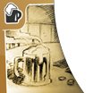
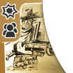

BANG!
La carta BANG! è il modo principale per sparare un

e ridurre i punti vita degli altri giocatori.
Puoi giocare una carta BANG! solo su giocatori alla tua portata di fuoco!
Normalmente puoi giocare una sola carta BANG! per turno.

Mancato!
Quando sei colpito da un
puoi giocare subito un Mancato!,
anche se non è il tuo turno, per annullare [

] il colpo.
Se non lo fai perdi un punto vita. Quando finisci i punti vita sei eliminato dal gioco, a meno che non giochi una
Birra "in extremis".

Birra
Giocala di fronte a te per ripristinare un punto-vita. La BIRRA si usa anche "in extremis" se si sta perdendo l'ultimo punto-vita.
La BIRRA non ha effetto se sono rimasti solo 2 giocatori.

Panico!
"Pesca una carta" (ruba) da "un giocatore a distanza 1".
Ricorda che questa distanza non è modificata dalle armi, ma
solo dalle carte tipo Mustang e/o Mirino.

Cat Balou
Costringe "un qualsiasi giocatore" a "scartare una carta", indipendentemente
dalla distanza.

Duello
Ti permette di sfidare un giocatore qualsiasi indipendentemente dalla distanza.
L'avvesario sceglie se rispondere scartando una carta BANG!, se lo fa tocca a te
scegliere se scartare una carta BANG! e così via. Il primo dei due che non scarta
una carta BANG! perde un punto vita ed il duello termina.

Indiani!
Ogni giocatore, eccetto chi gioca questa carta, sceglie se rispondere scartando
una carta BANG! o perdere un punto vita.

Emporio
Prendi dal mazzo tante carte quanti sono i giocatori ancora in gioco, e disponile
scoperte sul tavolo. Partendo da te e procedendo in senso orario, ognuno sceglie una
carta e la aggiunge alla propria mano.

Diligenza
Pesca due carte dalla cima del mazzo.

Wells Fargo
Pesca tre carte dalla cima del mazzo.

Gatling
La Gatling spara un
a "tutti gli altri giocatori",
indipendentemente dalla distanza. La Gatling non è considerata una carta BANG!. Durante
il tuo turno puoi giocare quante Gatling vuoi, ma sempre una sola carta BANG!.

Saloon
Questa carta fa recuperare a tutti i giocatori, te incluso, un punto vita (se possibile).
Non puoi giocare il Saloon fuori turno "in extremis": il Saloon non è una Birra!

Whisky (DODGE CITY)
Quando la giochi, devi scartare un'altra carta a tua scelta dalla mano. Giocala di fronte a te per ripristinare due punti-vita.

Tequila (DODGE CITY)
Quando la giochi, devi scartare un'altra carta a tua scelta dalla mano. Giocala di fronte a te o su un altro giocatore per ripristinare un punto-vita.

Pugno (DODGE CITY)
Ha l'effetto di un BANG!
, ma a distanza 1; PUGNO non influisce sul numero di BANG! giocati in questo turno.

Springfield (DODGE CITY)
Quando la giochi, devi scartare un'altra carta a tua scelta dalla mano. Giocala su un giocatore qualsiasi per sparargli un
.

Schivata (DODGE CITY)
Funziona come MANCATO! [
], ma ti fa pescare una carta dal mazzo [

].

Rag Time (DODGE CITY)
Quando la giochi, devi scartare un'altra carta a tua scelta dalla mano. Giocala su un giocatore qualsiasi per "rubare" una carta
. In modalità "normale" puoi giocare questa carta su te stesso portandola al centro del tavolo.

Rissa (DODGE CITY)
Quando la giochi, devi scartare un'altra carta a tua scelta dalla mano. Giocala di fronte a te per far scartare una carta a tutti gli altri giocatori.